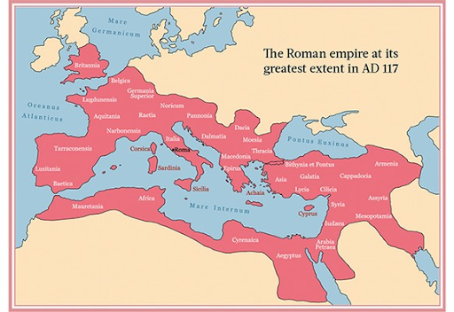

the rest of this page will be about different things that medieval socities left behind for us today, their legacies. Write down in your notes examples of medieval legacies that you still know about or use today.
Understanding BCE & CE
BCE
Before Common Era
Years count backward
CE
Common Era
Years count forward
Timeline Example
BCE = Before Common Era
• Same as BC (Before Christ)
• Years go down (100 BCE → 50 BCE)
CE = Common Era
• Same as AD (Anno Domini)
• Years go up (50 CE → 2025 CE)
Roman legends say that Rome was founded in 509 B.C.E. Archaeologists agree with a date around 600 B.C.E.
The Western Roman Empire fell in 476 C.E.
The United States only has existed for around 250 years
This means that all of US history fils into Roman history 10 times!
A generation is about 20 years. That means that over Roman History there are 100 generations. One hundred families were formed, had kids, the kids grew up and their kids had kids etc.
Time is very hard to keep track of, especially very long times like the length of the Roman Empire. Check out this image in order to put it in perspective
{kind=link}